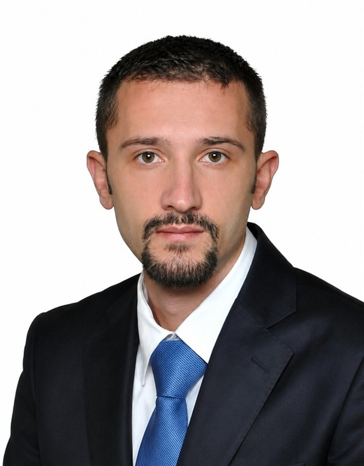

Custom software development
Business applications built and improved around real processes, established rules and the people who rely on them.
- Desktop & web applications
- APIs & databases
- Modernization & maintenance
Independent software engineering · Pristina, Kosovo
I help businesses build custom C#/.NET applications, extend ASP.NET Core APIs, and improve existing software through maintenance and modernization.
15+ years building and supporting business software direct collaboration with Fidan
A simplified view of how applications, business rules and data connect.
01 Services
From the first technical decision to ongoing improvements, work is shaped around how your business and existing systems actually operate.
Business applications built and improved around real processes, established rules and the people who rely on them.
C#/.NET application engineering for teams building or evolving software delivered as a service.
Direct collaboration with an independent C#/.NET engineer for organizations needing focused external development expertise.
02 Technical expertise
Technology is selected to suit the requirements, constraints and lifetime of the system—not to follow a trend.
Strong expertise in C#, .NET, ASP.NET Core, Entity Framework Core, SQL Server, backend development, and software architecture.
Talk through your stackC# · SQL · JavaScript · HTML · CSS
.NET · .NET Core · .NET Framework · ASP.NET Core · ASP.NET Core Web API · ASP.NET MVC · WinForms
Entity Framework · Entity Framework Core · Microsoft SQL Server · MariaDB · SQL Server Stored Procedures
Clean Architecture · Onion Architecture · Three-Layered Architecture · Repository Pattern · Unit of Work · Data-Mapper Pattern · Active-Record Pattern
Microsoft Azure · Azure App Service · Azure DevOps · Docker · IIS
NUnit · Clean Code · Agile · Scrum
Git · GitHub · GitLab · Visual Studio
jQuery · Vue JS · Elasticsearch · Google Maps · Konva JS · Flexmonster · DBeaver · Devart Provider for MySQL · ServiceStack 3.9 · Microsoft SQL Server Analysis Services · VB.NET · ASP.NET WebForms · ASMX Web Services · Microsoft Managed Extensibility Framework · ASP.NET HTTP Handlers · FTP-based communication · SourceTree · Stash · Bamboo · Vibe · JIRA
Skills and technology names are taken from Fidan's resume.
03 Experience
Resume-based work spans financial, government, telecommunications, education and commercial systems—from application and API development to maintenance and support.
Dates and work arrangements follow the resume. Some date ranges overlap; the source does not explain the relationship between those entries.
Explore selected project experience
Experience across desktop and web applications, APIs, and enterprise systems.
API endpoints, administration panels, data warehouses, ETL, and database-backed applications appear in the resume.
Documented work includes feature changes, issue resolution, technical support, and dependency upgrades.
Pristina, Republic of Kosovo
Pristina, Republic of Kosovo
Pristina, Republic of Kosovo
Pristina, Republic of Kosovo
Pristina, Republic of Kosovo
Pristina, Republic of Kosovo
Pristina, Republic of Kosovo
Pristina, Republic of Kosovo
Pristina, Republic of Kosovo
Pristina, Republic of Kosovo
Pristina, Republic of Kosovo
Pristina, Republic of Kosovo
Pristina, Republic of Kosovo
Pristina, Republic of Kosovo
Pristina, Republic of Kosovo
Pristina, Republic of Kosovo
Pristina, Republic of Kosovo
WAYS TO WORK TOGETHER
Requirements, responsibilities and terms are discussed individually. No fixed packages, prices, timelines or capacity are implied.
Discuss a working model
04 About
I'm Fidan Abdiu, founder of SOFT DESIGN, an independent software engineering practice. Clients work directly with me to build, improve and support software their businesses rely on.
For more than 15 years, I have worked across C# and .NET web applications, APIs, desktop systems, databases and enterprise software in financial, public-sector, telecommunications, education and commercial environments.
I value clear communication, maintainable code and careful technical decisions. I can contribute to a project or an existing team without adding an agency layer, and I keep collaboration grounded in the system's real context.
05 Working approach
The process stays visible and proportionate to the problem—from understanding the context through validation and ongoing improvement.
Clarify the business need, stakeholders, existing constraints and what success means.
Review current software, dependencies, risks and opportunities before recommending change.
Agree an architecture and implementation plan that fit the requirements and can be maintained.
Build in clear increments, communicate decisions and keep feedback close to the work.
Check behavior against requirements and address issues before handover.
Support a considered handover and continue evolving the software as needs change.
START A CONVERSATION
Share what you are building, where you're stuck, or what needs to work better. You will speak directly with Fidan.
fidanabdiu@gmail.com+383 (0) 49 221 841Pristina, Kosovo · Remote collaborationShare a few useful details.